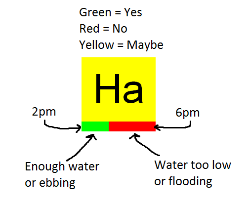
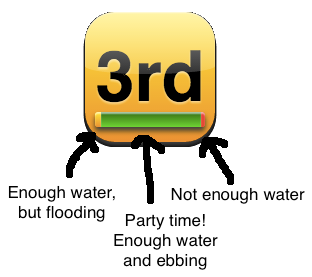

**DawgTide**
DawgTide is a windsurfing-optimized dashboard of daily tides for the
San Francisco Bay Area. It gives a high-level overview of the water
level and current conditions at the windsurfing sites most affected by
tides (e.g. Crissy Field, Haskins, and others).
[DawgTide](http://winds.leverich.org/dawgtide/) is the successor to
[Tidely](http://winds.leverich.org/tidely/). It is written entirely in
Javascript and HTML/CSS (including harmonic tide prediction).
https://github.com/leverich/dawgtide/
# Basic Usage

Sites with tide and current (3rd Ave and Palo Alto)

# Stations
Site | Reference | Coordinates
--------------------------|--------------------------------|-----------------------
Haskins (tide) | [Oyster Point Marina](https://co-ops.nos.noaa.gov/stationhome.html?id=9414392) | 37.664964, -122.376688
Golden Gate (current) | [Golden Gate Bridge (0.46 nm E)](http://tidesandcurrents.noaa.gov/noaacurrents/Predictions?id=SFB1203_18) | 37.8201, -122.4730
Treasure Island (current) | [Treasure Island (0.78 nm NW)](http://tidesandcurrents.noaa.gov/noaacurrents/Predictions?id=SFB1210_13) | 37.8373, -122.3872
3rd Avenue (tide) | [San Mateo Bridge](https://co-ops.nos.noaa.gov/stationhome.html?id=9414458) | 37.579991, -122.253344
3rd Avenue (current) | [San Mateo Bridge](http://tidesandcurrents.noaa.gov/noaacurrents/Predictions?id=SFB1305_7) | 37.5878, -122.2502
Palo Alto (tide) | [Coyote Creek, Alviso Slough](https://co-ops.nos.noaa.gov/stationhome.html?id=9414575) | 37.465000, -122.023323
Palo Alto (current) | [Dumbarton Bridge](http://tidesandcurrents.noaa.gov/noaacurrents/Predictions?id=SFB1301_12) | 37.5018, -122.1160
Delta (current) | [Sherman River Light 14](http://tidesandcurrents.noaa.gov/noaacurrents/Predictions?id=SFB1332_15) | 38.0772, -121.7639
To predict water levels "tide" stations, the harmonic constituents
published by NOAA
(e.g. [https://co-ops.nos.noaa.gov/harcon.html?id=9414392](https://co-ops.nos.noaa.gov/harcon.html?id=9414392))
are used
as-is. To predict speeds for "current" stations, harmonic constituents
are estimated from NOAA predictions using the method described below.
## Map
https://goo.gl/Ikzq06
https://www.google.com/maps/d/viewer?mid=zuRpQMcYORZo.kEH83Bs1mltc
# Fitting Harmonic Constituents from Data
Given timestamped data from a tide station, we can fit the components
of a [tidal harmonic model](https://en.wikipedia.org/wiki/Theory_of_tides#Harmonic_analysis) using plain linear regression (ordinary
least squares).
The harmonic model of tides for a station \(s\) at time \(t\) (relative to
some reference year \(Y\)) for the [37 constituents](https://en.wikipedia.org/wiki/Theory_of_tides#Tidal_constituents) used by NOAA/NOS is:
$$ y(s,t,Y) = Z_s + \sum_{i=1}^{37} a_{s,i} \cdot n_{Y,i} \cdot \textrm{cos}(t \cdot \omega_i + \Phi_{Y,i} - \phi_{s,i}) $$
where:
* \(s\) is a tide station (e.g. "San Francisco, CA", 9414290).
* \(t\) is a timestamp in seconds since Jan 1 \(Y\) 00:00 UTC.
* \(Y\) is the year of the prediction.
* \(Z_s\) is the mean tide value for station \(s\) (e.g. mean sea level relative to some "[datum](https://tidesandcurrents.noaa.gov/datum_options.html)", or average current).
* \(a_{s,i}\) is the amplitude for coefficient \(i\), station \(s\). Typically reported in feet for tide height, knots for tidal current.
* \(n_{Y,i}\) is the "node factor" for coefficient \(i\) for year \(Y\) (based on the [Moon's nodal period](https://en.wikipedia.org/wiki/Lunar_node) of ~18.61 years). Unitless. This is computed using [tide_fac.f](https://gist.github.com/leverich/e0834df944d457962a4e), which follows the methodology of [Schureman](http://docs.lib.noaa.gov/rescue/cgs_specpubs/QB275U35no981940.pdf).
* \(\omega_i\) is the speed for coefficient \(i\) (radians per second). Often reported in degrees per hour.
* \(\Phi_{Y,i}\) is the "equilibrium"
phase "\(V_0 + U\)" for coefficient \(i\), year \(Y\) (radians). Often reported in degrees. This is computed using [tide_fac.f](https://gist.github.com/leverich/e0834df944d457962a4e), which follows the methodology of [Schureman](http://docs.lib.noaa.gov/rescue/cgs_specpubs/QB275U35no981940.pdf).
* \(\phi_{s,i}\) is the phase for coefficient \(i\), station \(s\) (radians). Often reported in degrees.
Note that this model is complicated by the presence of the "lookup
tables" \(n\) and \(\Phi\). This is a peculiar artifact of
[Schureman's](http://docs.lib.noaa.gov/rescue/cgs_specpubs/QB275U35no981940.pdf)
methodology, for which he provided exhaustive tables of constants in
various appendices.
It's particularly annoying that all of the phases are effectively
referenced from Jan 1 of a specific year, rather than a fixed point in
the past (e.g. the UNIX epoch, Jan 1 1970 00:00 UTC).
Be especially careful when algebraically manipulating this model to
keep track of the reference time used for timestamps and phases.
## Estimating \(a\) and \(\phi\)
To fit parameters to the harmonic model given above, we only need to
solve for \(a_{s,i}\)
and \(\phi_{s,i}\) for
\(i=1 \ldots 37\) (the 37
constituents reported by NOAA/NOS), as
\(n_{Y,i}\),
\(\Phi_{Y,i}\),
\(\omega_i\), and
\(t\) are all known parameters.
However, because of the unknown parameter within the \(\textrm{cos}\), this is not a linear system, so we can't directly solve for it
with least squares.
Instead, we solve for \(A_{s,i}\),
\(B_{s,i}\) in a model of the form:
$$ y(s,t,Y) = Z_s + \sum_{i=1}^{37} \left(A_{s,i} \cdot n_{Y,i} \cdot \textrm{sin}(t \cdot \omega_i + \Phi_{Y,i}) + B_{s,i} \cdot n_{Y,i} \cdot \textrm{cos}(t \cdot \omega_i + \Phi_{Y,i})\right) $$
Note that the terms other than \(A_{s,i}\) and
\(B_{s,i}\) are known and constant,
so this is trivially optimized
with a least squares solver.
Then, using the trigonometric identity:
$$ A \cdot \textrm{sin}(\theta) + B \cdot \textrm{cos}(\theta) = \sqrt{A^2+B^2} \cdot \textrm{cos}\left(\theta + \textrm{atan2}(B_{s,i},A_{s,i}) - \frac{\pi}{2}\right)$$
we solve for \(a_{s,i}\) and
\(\phi_{s,i}\) algebraically as:
$$ a_{s,i} = \sqrt{A_{s,i}^2 + B_{s,i}^2} $$
$$ \phi_{s,i} = -\textrm{atan2}(B_{s,i},A_{s,i}) + \frac{\pi}{2} $$